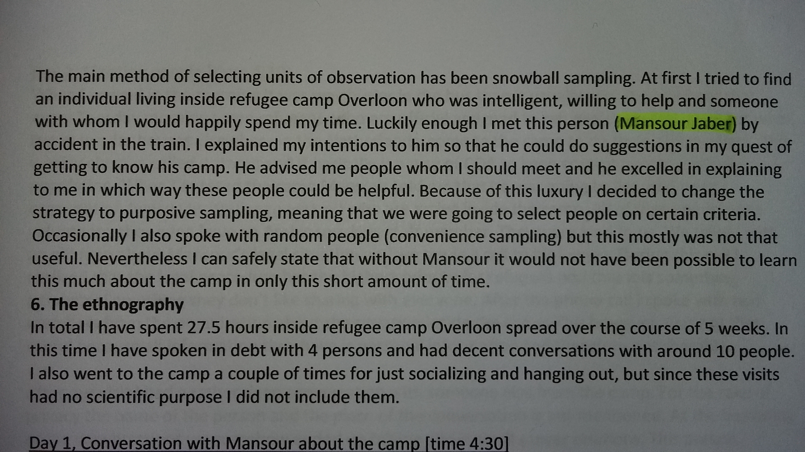
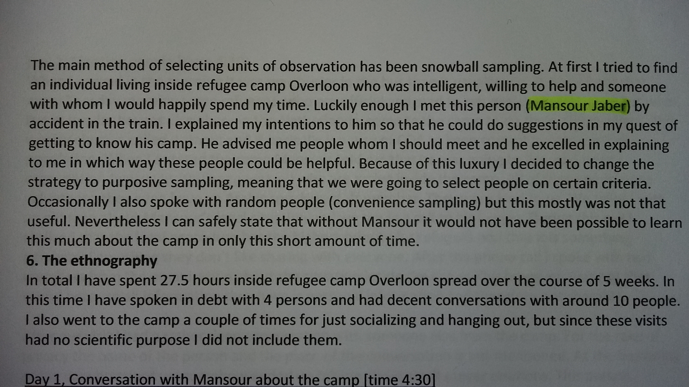

Personal Information
- Name:Mansour Jaber
- Adress:5751Lm,zielbergsestraat
- linkedin profile:Mansour Jaber
- E-mail: mansourjaber@yahoo.com
Practical Experince:
- Jordan
- Netherland
2006-2007 Pharma Industry: I work in QC lab as Chemical Analyst for medicine factory and I work as a Chemical Assistant in Pharmaceutical Research Center
2007-2015 teaching:Teacher in Jordanian Ministry for education
2016 supervisor of the computer hall and a translator English/ Arabic with COA team in ACZ.medewerker card COA
2017 Working in the second-hand shop "Furniture Outlet Deurne" Help customers and answer their questions. Protect objects against theft or damage. Organize and categorize the objects in the exhibition
Eduction
- BA of Science in Chemistry from Petra University Grad Very good. Certificate
- English Intermediate 2 from British council. Certificate
Document


 

About me:
I am a naturally talented where I graduated as the first on my classmates and after that, I worked in IMC and they trust in my analyzing quickly so they gave me a finished product to work on it after a short time from working with them. I worked in IPRC and after a month a " thank you letter " had been given to me from the manager for organizing the solvent lab according to safety instruction. As a teacher, I have been teaching from September 2007 so I am experienced, also I am sympathetic which make my student love me, and their parents also cause I make the children motivated to look for new information.